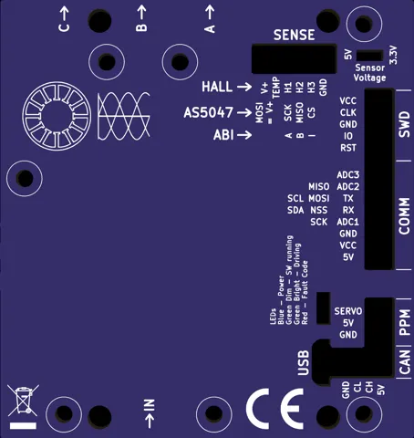

Allume la planche, puis connecte le module Bluetooth du VESC. Toutes les fonctions de VESC Tool, depuis le téléphone.
Puissancemax —
—W
Batterie
—
Gaz
—
Contrôleur
—°C
Moteur
—°C
Contrôleur

—
—
Sauvegardes de configuration
Une copie de la configuration est gardée sur ce téléphone à chaque connexion et avant chaque écriture.
En cas de mauvais réglage, il suffit de la recharger puis d'écrire.
SessionGPS —
—km/h
— W
Enregistre ta sortie : trace GPS du téléphone et télémétrie du contrôleur, colorée selon la puissance.
Garde l'écran allumé et le téléphone dans une pochette étanche sur toi ou dans la planche.
Cartefaible forte
Sessions enregistrées
Détection FOC
Mesure la résistance, l'inductance et le flux du moteur, règle les courants et le régulateur. Compte une à deux minutes.
Le moteur va tourner. Hélice démontée ou planche bien calée, mains loin de l'hélice.
Usage : hélice (eFoil). Comme le mode « Propeller » de l'assistant VESC Tool :
arrêt de 500 ms sur défaut, pas de démarrage HFI, limites du BMS actives.
Type de moteur
Réglages avancés
0 = valeurs par défaut du contrôleur.
Régime moteurgaz — %
—ERPM
— A— V
Le moteur ne tourne que tant que ton doigt reste sur le bouton. Hélice démontée.
10%
Récepteur PPM
Entrées analogiques (ADC)
Centrale inertielle
Mise à jour du firmware
Un firmware qui ne correspond pas au matériel (?) peut rendre le contrôleur
inutilisable. Ne coupe pas l'alimentation et garde le téléphone près de la planche : par Bluetooth l'envoi dure plusieurs minutes.
1
Sauvegarder la configurationObligatoire : une mise à jour peut remettre les réglages à zéro.
2
Choisir le firmwareFichier .bin prévu pour ton matériel.
Firmwares officiels : archive VESC.
Les fichiers compressés (heatshrink) ne sont pas encore pris en charge : utiliser VESC Tool pour ceux-là.